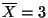

In a simple linear regression models we consider paired data,
What we wish to do with this sample information is to determine the line which fits the data and then use this fitted model to predict or forecast given .
The line given by
is called the regression line while
 are the regression parameters.
are the regression parameters.  is the regression intercept and represents the
average response when , while
is the regression intercept and represents the
average response when , while  is the regression slope. Recall that the slope
of a line gives the change in per unit change in
is the regression slope. Recall that the slope
of a line gives the change in per unit change in  . Therefore the regression slope represents
the average change in response per unit change in predictor.
. Therefore the regression slope represents
the average change in response per unit change in predictor.
Suppose that now, assuming this model, we generate  data points
data points
As a first step we graph these data points to form a scatter diagram as in Figure 1. The estimate for the regression line would be the "best" fitted line to these sampled points.
The value would be an estimate for  and the value
and the value  would be an estimate for
would be an estimate for  .
We need criteria in order to determine thsis "best fitted" line.
.
We need criteria in order to determine thsis "best fitted" line.
For each  , if
, if  is any fitted line, the value
is any fitted line, the value
To determine the values of the methods of calculus are used to minimize the expression for SSE
as a function of and  . In order to present the solution we introduce the following
quantities:
. In order to present the solution we introduce the following
quantities:

All computations in simple linear regression will involve these expressions. Notice that
is the variance of the  data without the denominator. Similarly
data without the denominator. Similarly  is the variance of the data without the denominator and represents the total variation in
response. This will be used later on in this chapter to measure how strong the linear
relationship is.
is the variance of the data without the denominator and represents the total variation in
response. This will be used later on in this chapter to measure how strong the linear
relationship is.  is the covariance of without the denominator and measures how
and vary together. Notice that and
is the covariance of without the denominator and measures how
and vary together. Notice that and  are always positive while
are always positive while  will be positive if on average increases when increases and
will be positive if on average increases when increases and  will be negative if on
average decreases when increases.
will be negative if on
average decreases when increases.
Using the calculus techniques it can be shown that the least squares estimators for
 are given by
are given by
We now give an example of determining the least squares line and its use in making a simple forecast.
EXAMPLE 1
Consider the following data
Determine the least squares line and forecast the average value of response for 
Here
 and
and
 . The table below gives the computations.
. The table below gives the computations.
Hence we find that and . Therefore